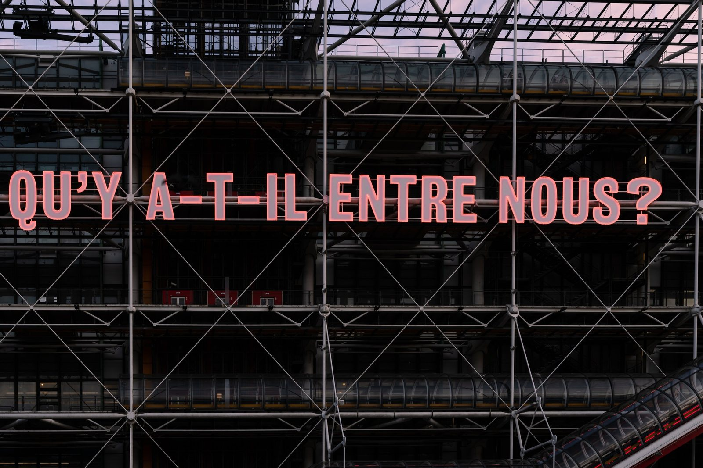
Centre Pompidou
IIn 2021, the Centre Pompidou in Paris presented the exhibition Qu'y a-t-il entre nous? ("What is between us?"), featuring a monumental neon installation by British artist and performer Tim Etchells. Commissioned as part of the Festival d’Automne and inaugurated during the Nuit Blanche on October 2, 2021, the installation was displayed until February 14, 2022 .
The phrase "Qu'y a-t-il entre nous?" posed a poignant question about human connection, exploring themes of intimacy, division, and the bonds that unite or separate us. Etchells' use of simple neon phrases aimed to create moments of reflection and ambiguity, engaging viewers in a dialogue about the complexities of social relationships.
I wanted to explore more connections between people and art. What is between us?
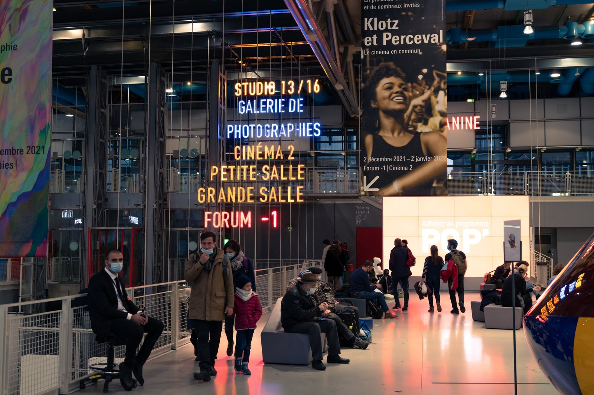
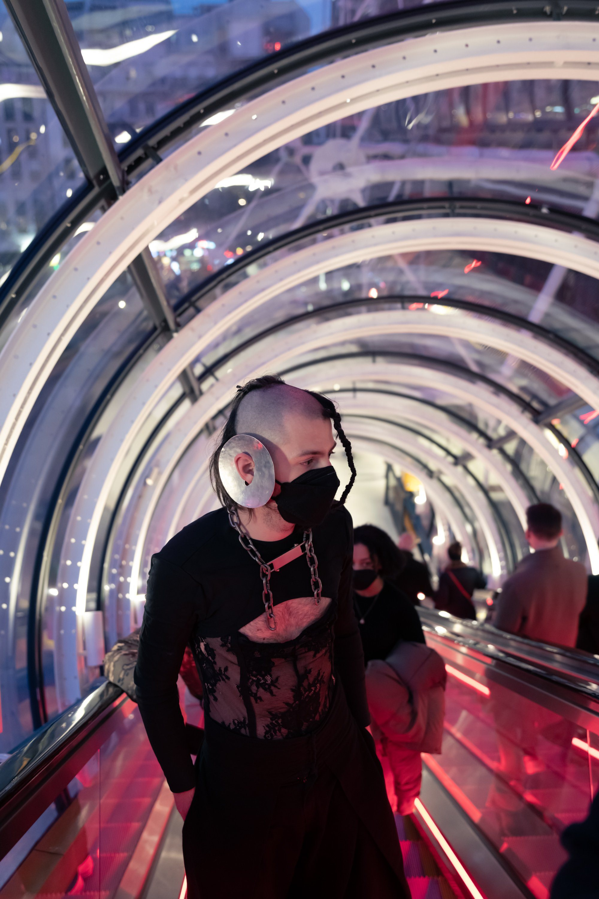
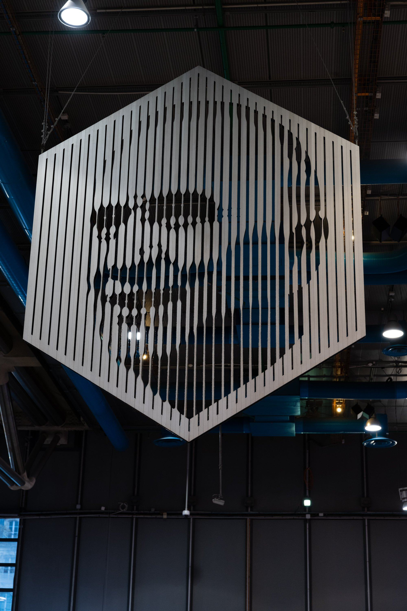
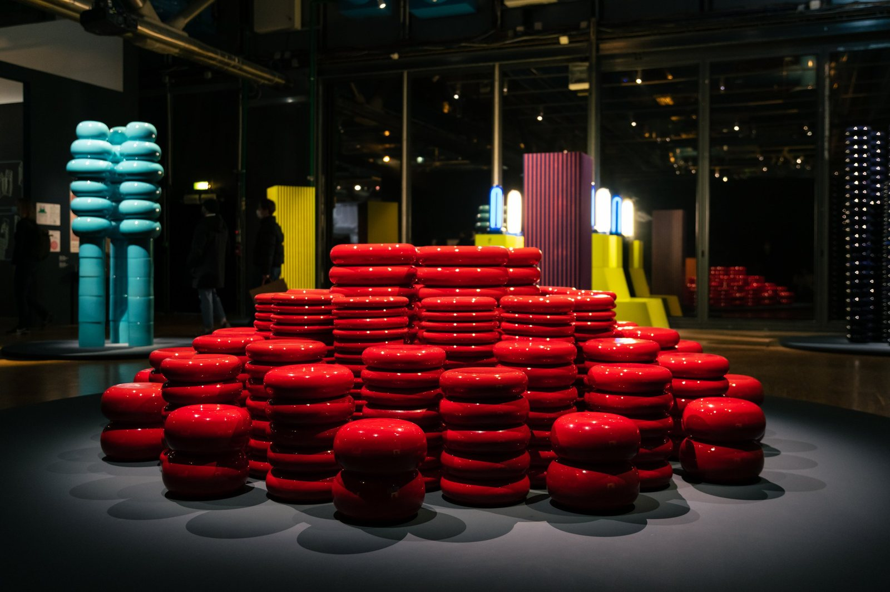
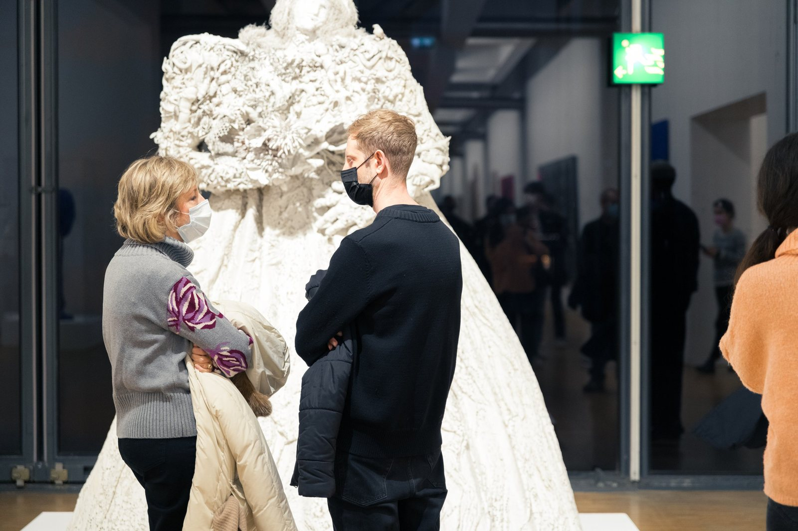
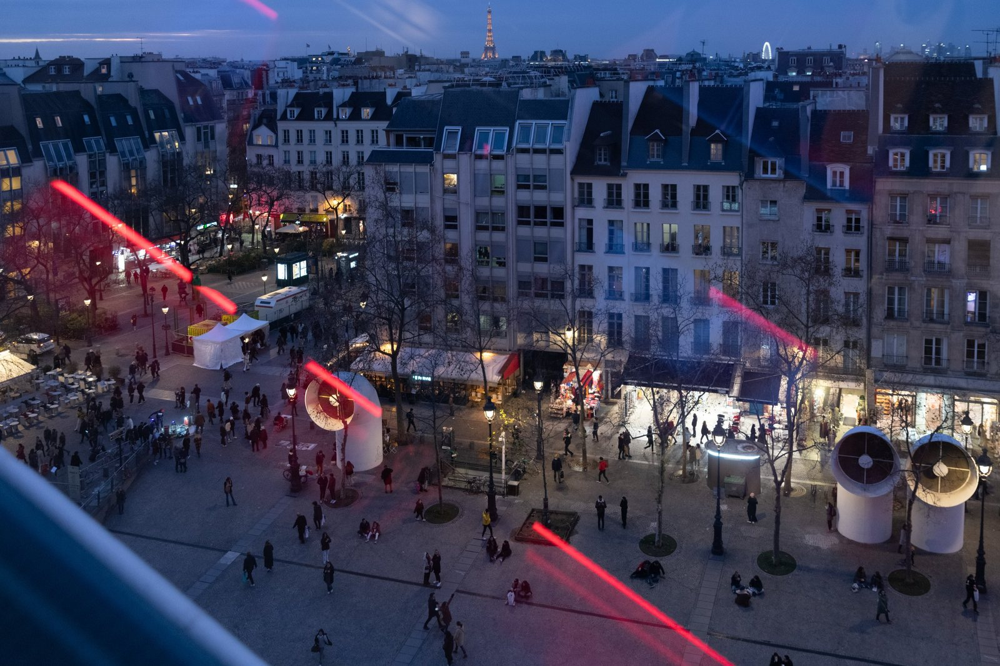
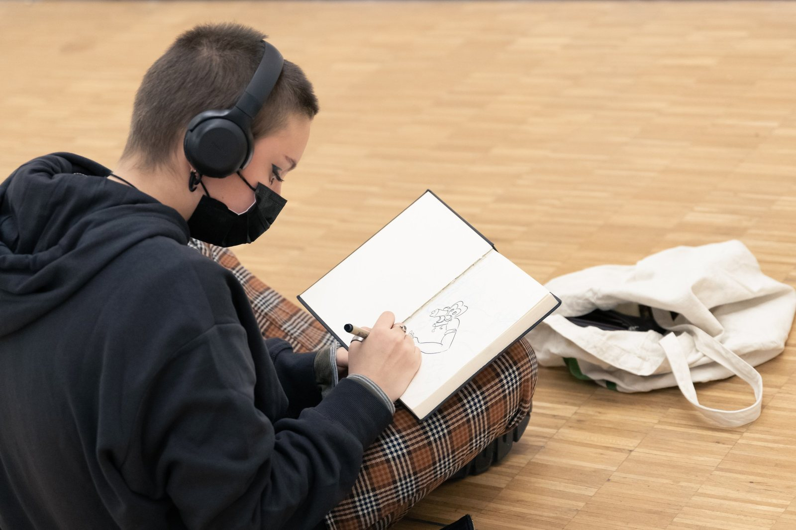
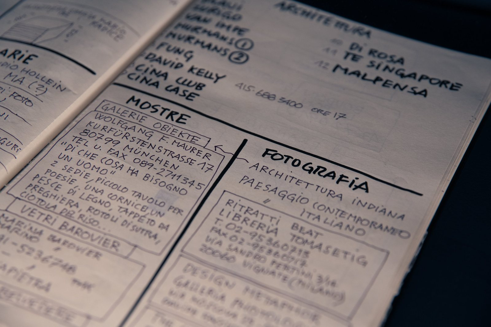
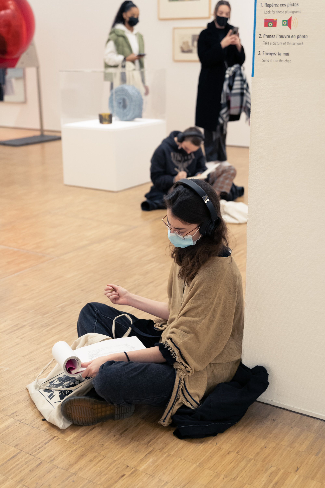
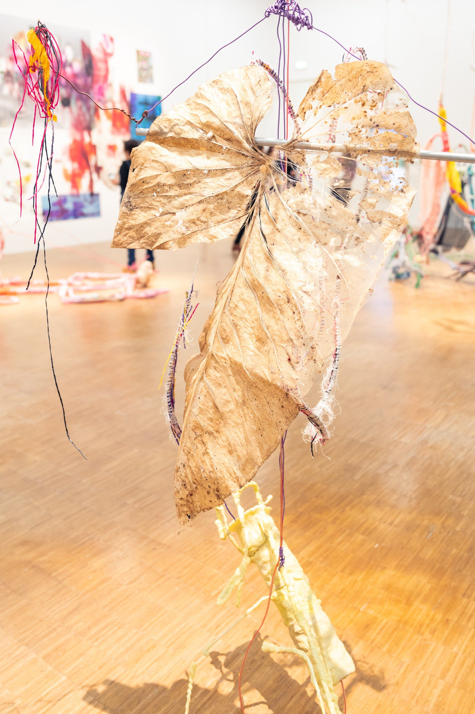
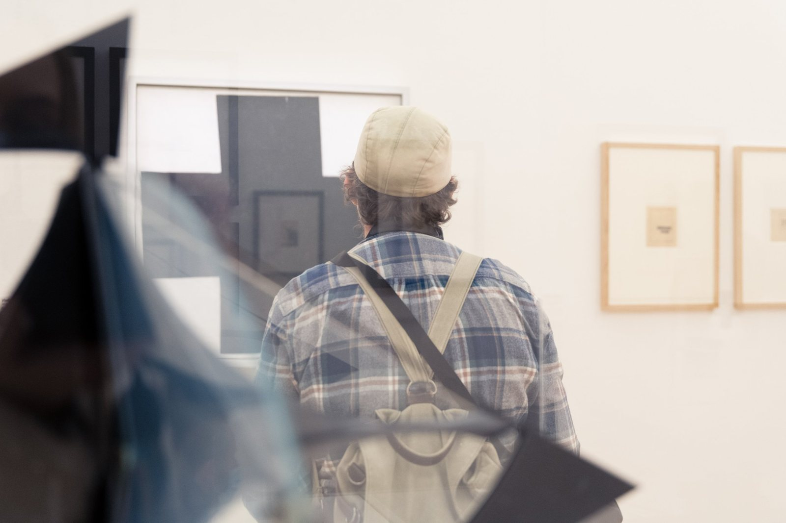
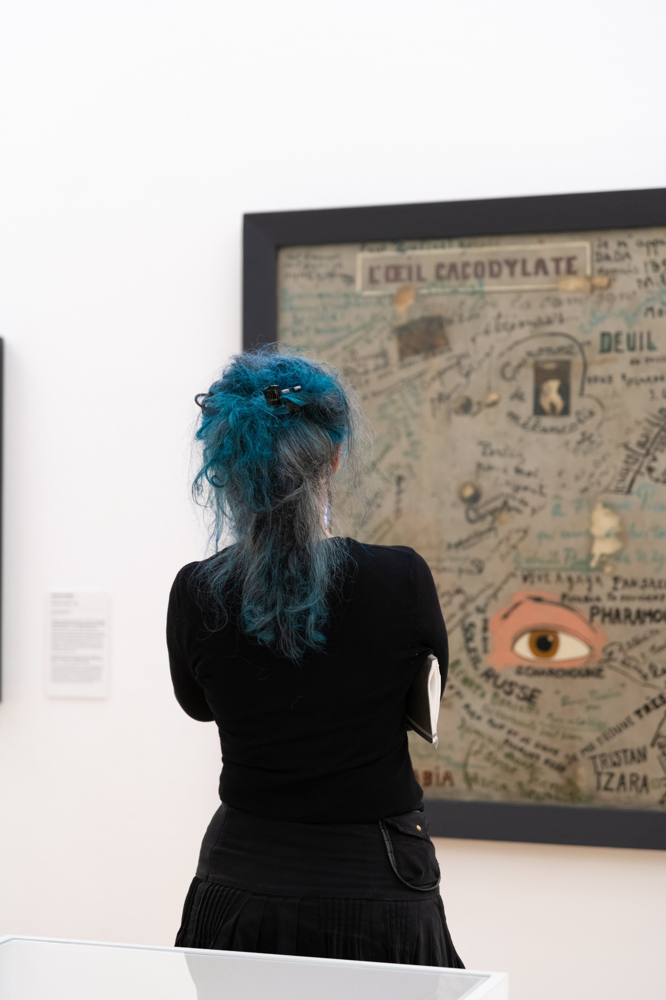
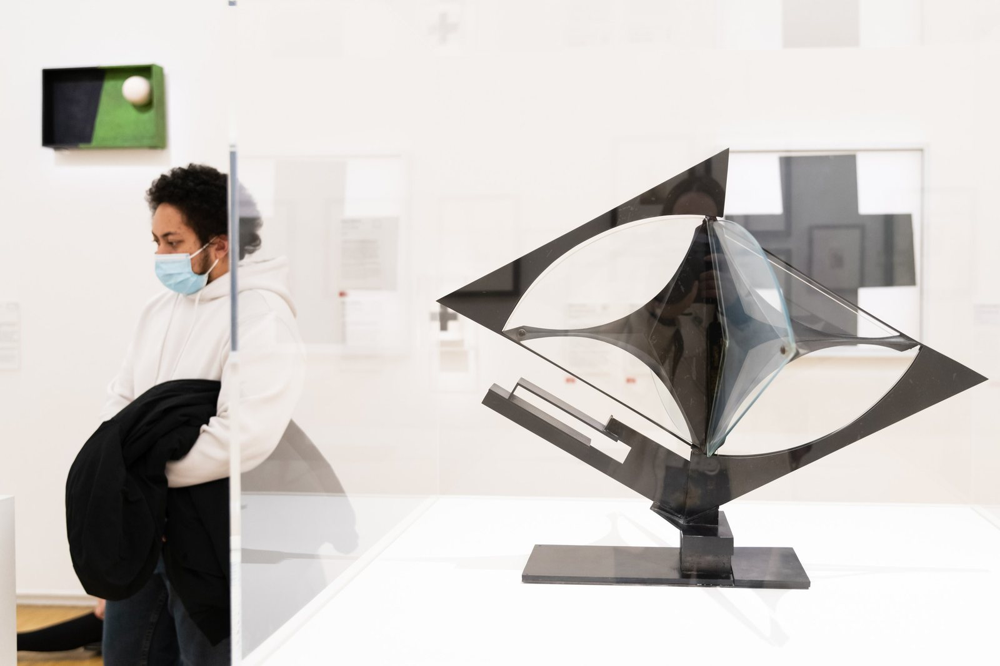